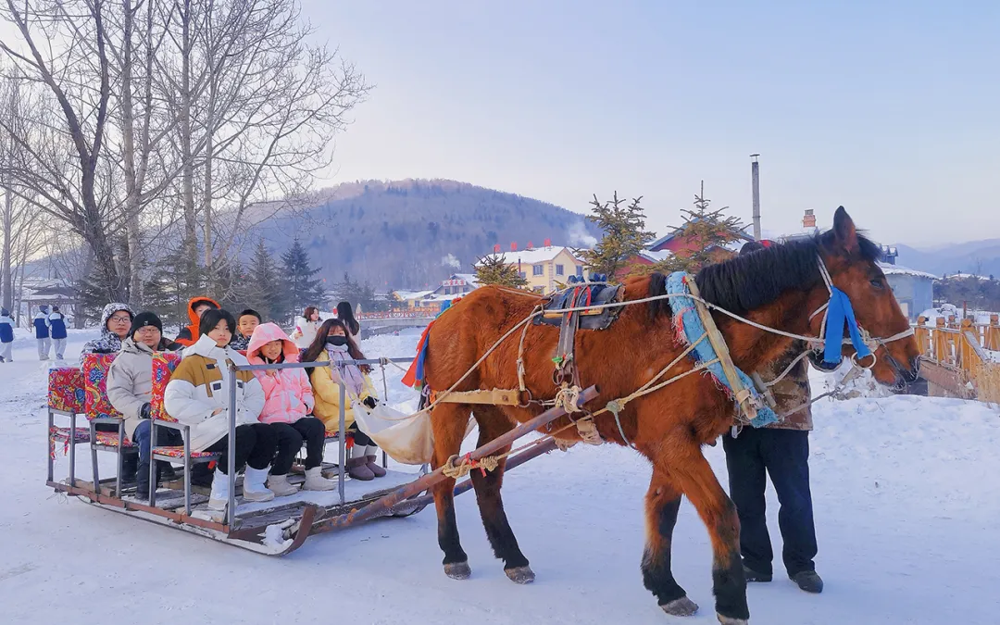
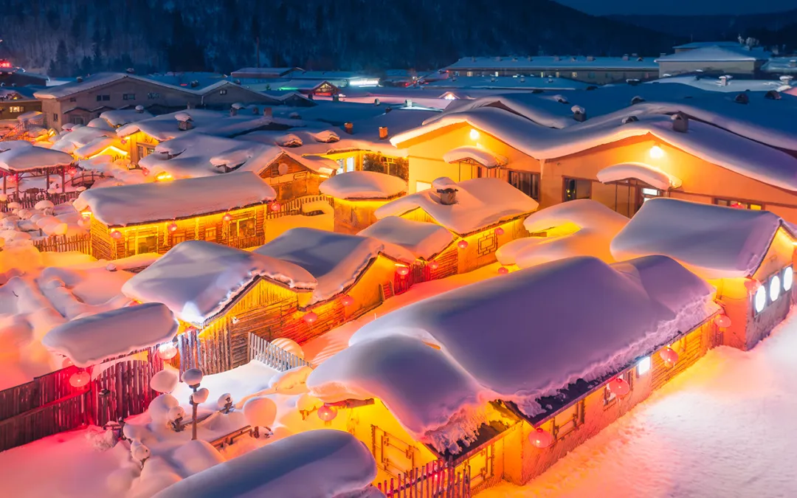
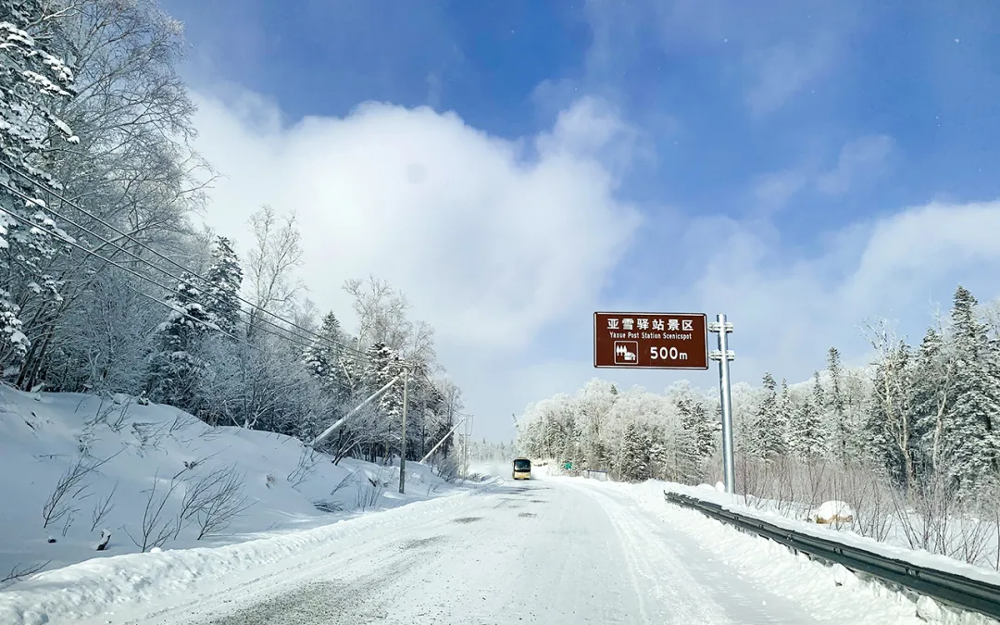
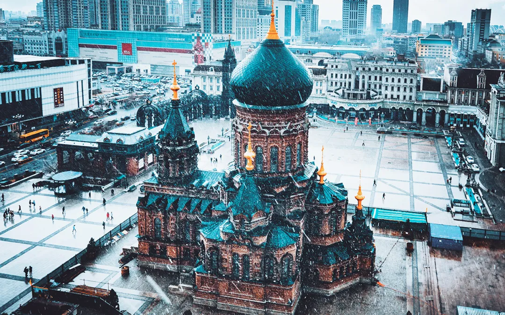
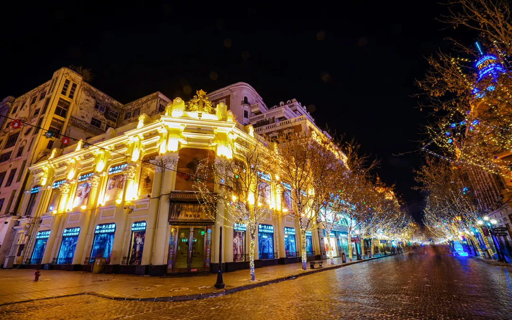
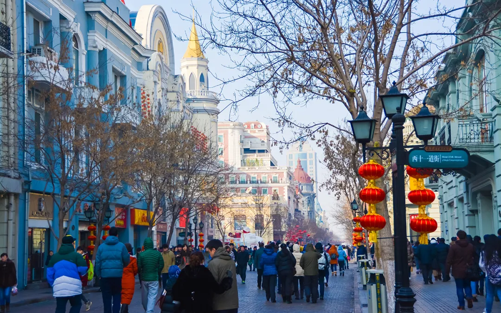

2–8人精品小团 DONGBAIWINTER
冰雪梦幻 A 线
从哈尔滨到吉林 · 一次玩透东北经典大环线
- 1雪地摩托、温泉、漂流、冰钓、泼水成冰等热门玩法全覆盖
- 2赠旅拍与团队无人机航拍，双机位定格冬日大片
- 3独家林海雪原徒步，4晚4钻＋1晚5钻＋雪乡特色炕
- 4万科5S雪场专业滑雪；2–8人真纯玩，无隐形消费
返程高铁建议16:30后，飞机建议19:00后
冬捕、雪圈漂移仅限 1.1–2.10 结冰安全期体验

2—28人 · 精品小团 · 纯玩无套路

2–8人精品小团 DONGBAI从哈尔滨到吉林 · 一次玩透东北经典大环线
返程高铁建议16:30后，飞机建议19:00后
冬捕、雪圈漂移仅限 1.1–2.10 结冰安全期体验

2–8人精品小团 DONGBAI横跨黑吉两省 · 五天解锁东北冰雪精华
返程高铁建议16:00后，延吉航班建议18:00后

2–8人精品小团 DONGBAI四天短途环线 · 浓缩东北冰雪核心乐趣
返程火车建议20:00后，飞机建议23:00后
雪乡·长白山·雾凇·亚雪公路 · 经典大环线
返程高铁建议16:30后，飞机建议19:00后

春节限定 · 全年一批 DONGBAI在雪乡热炕上 · 过一个原汁原味的东北新年
返程火车建议20:00后，飞机建议23:00后

跨年限定 · 全年一批 DONGBAI在林海雪原 · 用满满仪式感迎接新年
返程火车建议20:00后，飞机建议23:00后